tosscoin <- function(n) {
df <- expand.grid(replicate(n, c("H", "T"), simplify = FALSE),
KEEP.OUT.ATTRS = FALSE,
stringsAsFactors = FALSE)
names(df) <- paste0("X", seq_len(n))
return(df)
}TEORÍA DE PROBABILIDAD (con R)
Espacio muestral, eventos y técnicas de conteo
About these lecture notes. These lecture notes introduce fundamental concepts of probability theory, including sample spaces, events, set operations, urn models, and counting techniques. The material combines theoretical explanations with examples and applications using R.
1 Paquetes
En R podemos encontrar diversas funciones para ello:
expand.griden el paquetebasede R.combnen el paquetecombinat.
2 Funciones
Para nuestros cálculos, utilizaremos la función expand.grid. En este caso, creamos la siguientes TRES funcione: tosscoin(n), rolldie(n) y isin(). Se describirán a continuación.
2.0.1 Función tosscoin(n)
La idea de esta función es generar el espacio muestral de lanzar una moneda exactamente \(n\) veces, con valores cara (H) y sello (T):
2.0.2 Función rolldie(n)
Con ella se genera el espacio muestral al lanzar un dado exactamente \(n\) veces, con valores de 1 a 6 por lanzamiento.
rolldie <- function(n, sides = 6, makespace = FALSE) {
df <- expand.grid(replicate(n, 1:sides, simplify = FALSE),
KEEP.OUT.ATTRS = FALSE)
names(df) <- paste0("X", seq_len(n))
if (makespace) {
df$prob <- rep(1 / nrow(df), nrow(df)) # Agrega la columna de probabilidad
}
return(df)
}NOTA: En esta función, makespace = TRUE agregará una columna de probabilidades (prob = 1/n) al espacio muestral, para convertirlo en un “objeto tipo espacio de probabilidad”.
2.0.3 Función isin()
Con ella se verifica si ciertos valores están presentes en cada fila de una matriz o data frame. Se puede usar con o sin tener en cuenta el orden.
isin <- function(x, table, ordered = FALSE) {
# Si x es un vector, lo convertimos en una matriz con una sola fila
if (is.vector(x)) {
x <- matrix(x, nrow = 1)
}
# Validación
if (!is.data.frame(x) && !is.matrix(x)) stop("x debe ser un vector, data.frame o matriz")
# Aplicar fila por fila
apply(x, 1, function(row) {
row_vals <- as.character(row)
tab_vals <- as.character(table)
if (ordered) {
# Buscar subsecuencia exacta
len_row <- length(row_vals)
len_tab <- length(tab_vals)
if (len_tab > len_row) return(FALSE)
for (i in 1:(len_row - len_tab + 1)) {
if (all(row_vals[i:(i + len_tab - 1)] == tab_vals)) return(TRUE)
}
return(FALSE)
} else {
# Verificar si todos los valores de 'table' están presentes (sin importar orden)
all(tab_vals %in% row_vals)
}
})
}2.0.4 Función urnsamples()
Esta función genera todas las muestras posibles de una urna según estos cuatro escenarios:
- x: Representa la urna desde la cual se va a hacer el muestreo.
- size: Tamaño de la muestra.
- replace: TRUE, si es con reemplazo; y FALSE, sin reemplazo.
- ordered: TRUE, si es con orden; y FALSE, sin orden.
urnsamples <- function(x, size, ordered = TRUE, replace = FALSE) {
if (ordered) {
# Producto cartesiano
expand.grid(replicate(size, x, simplify = FALSE),
KEEP.OUT.ATTRS = FALSE)
} else {
# Combinaciones sin orden
combn(x, size, simplify = FALSE) |>
do.call(what = rbind)
}
}2.0.5 Función nsamp()
Esta función calcula cuántas formas distintas hay de tomar \(k\) elementos de una población de n elementos, bajo distintas condiciones:
n: Tamaño de la población (elementos disponibles).k: Tamaño de la muestra-replace = FALSE: Sin reemplazo (sin repetir elementos).ordered = TRUE: Orden importa (permuta, no combina).
nsamp <- function(n, k, replace = FALSE, ordered = TRUE) {
if (ordered) {
if (replace) {
return(n^k) # Producto cartesiano con repetición
} else {
return(factorial(n) / factorial(n - k)) # Permutaciones sin repetición
}
} else {
if (replace) {
return(choose(n + k - 1, k)) # Combinaciones con repetición
} else {
return(choose(n, k)) # Combinaciones sin repetición
}
}
}3 Experimentos y tipos
Experimento: Cualquier acción que genera observaciones. Todo experimento se puede clasificar en determinístico y aleatorio o estocástico (ver definiciones y figura de abajo).
Experimento determinístico: Al repetirse bajo las mismas condiciones, genera siempre los mismos resultados.
Experimento aleatorio (o estocástico): Al repertirse bajo las mismas condiciones, no genera siempre los mismos resultados.
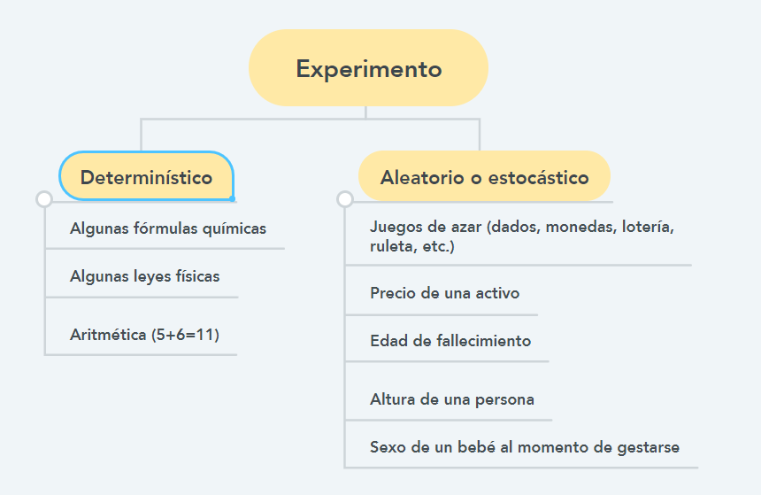
4 Espacio muestral, evento y evento elemental
Espacio muestral: Conjunto de todos los posibles resultados de un experimento aleatorio. Teóricamente se simbolizará con la letra griega omega: \(\Omega\).
Evento: cualquier subconjunto de \(\Omega\).
Evento elemental: evento con un solo elemento.
Revisaremos algunos ejemplos para encontrar los elementos de este conjunto.
5 Ejemplos sin R (espacio muestral y eventos)
5.0.1 Ejemplo: El lanzamiento de una moneda
Los posibles resultados son cara \((C)\) o sello \((S)\). Por tanto, \[\Omega=\{C,S\}\]
\(A=\{S\}=\) “la moneda señala sello” es un evento elemental.
\(B=\{C\}=\) “la moneda señala cara” es un evento elemental.
5.0.2 Ejemplo: Lanzamiento de dos monedas
Dos monedas diferentes se lanzan al mismo tiempo.
El espacio muestral correspondiente está dado por (en este caso \((C,S)\ne(S,C)\)): \[\Omega=\{(C,C),(C,S),(S,C),(S,S)\}\]
\(A=\{(C,C)\}=\) “las monedas muestran cara” es un evento elemental.
\(B\,=\,\{(S,S),(C,C)\}=\) “Ambas monedas muestran el mismo lado” es un ejemplo de un evento.
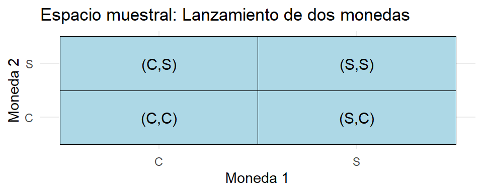
5.0.3 Ejemplo: repetir lanzamiento de una moneda
Se observa el número de lanzamientos que muestran sello (\(S\)) antes de que aparezca, por primera vez, una cara (\(C\))
En este caso, \[\Omega=\{0,1,2,\ldots,\infty\}\]
\(A\,=\,\{6,7,8,\ldots,\infty\} =\) “aparece, por primera vez, una cara después del quinto lanzamiento” es un evento.
\(B=\{3\}=\) “aparece cara, por primera vez, en el cuarto lanzamiento” es un evento elemental.
\(C=\{\infty\}\) es el evento elemental de que “la moneda nunca muestre a \(C\)”.
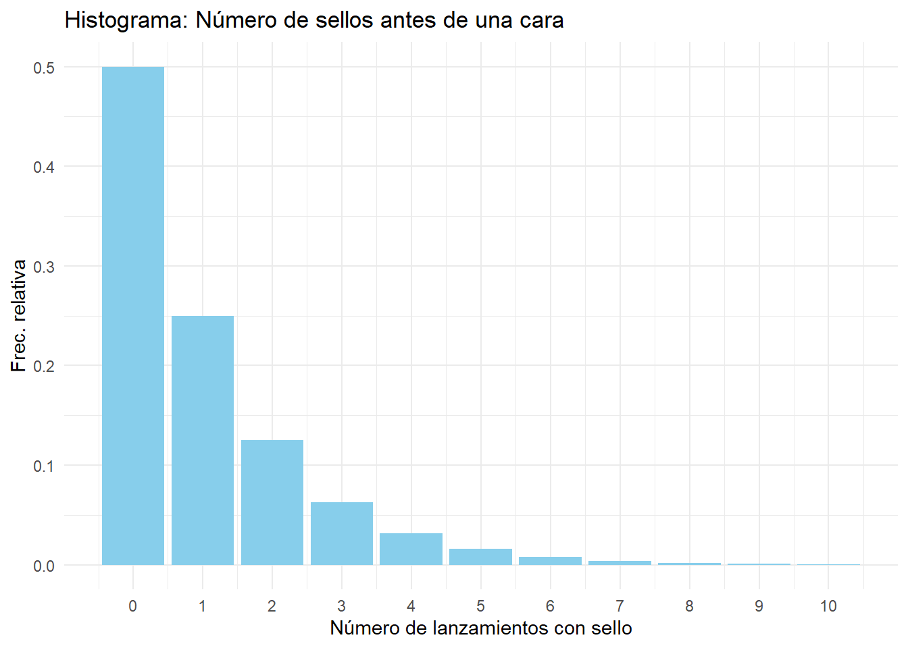
5.0.4 Ejemplo: edad de fallecimiento
Se observa la edad en la que diferentes personas mueren.
De esta forma, \(\Omega\) es el conjunto de todos los números reales menores o iguales que \(k\), donde \(k\) es la edad de la persona que más años ha vivido en la tierra.Es decir, \[\Omega = [0, k]\]
\(A=\{59.7\} =\) “Una determinada persona murió a la edad de 59.7 años” es un evento elemental.
\(B\, =\, [60,70]=\) “Alguien muere con edad entre 60 y 70 años” es un ejemplo de un evento de \(\Omega\).
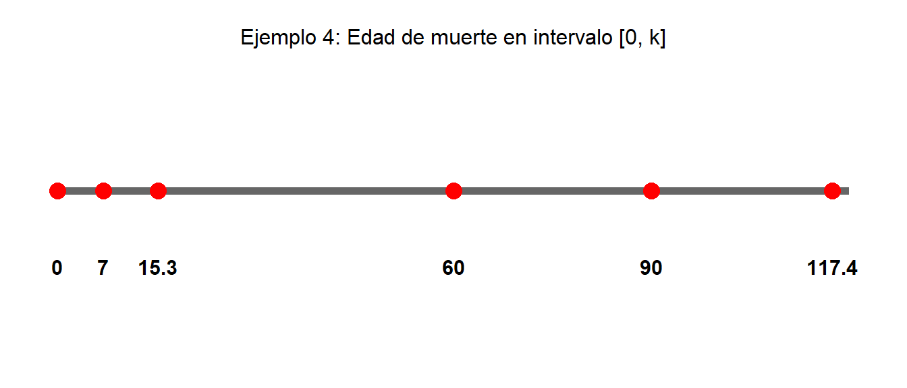
6 Ejemplos con R (espacio muestral)
6.0.1 Ejemplo: Lanzar monedas
Considere el experimento aleatorio de lanzar n veces una moneda. Los resultados elementales son H (head, cara) y T (tail, sello).Podemos hallar los elementos del espacio muestral con la función tosscoin (lanzamiento de monedas):
tosscoin(1) #A) Espacio muestral con n=1 lanzamiento de una moneda## X1
## 1 H
## 2 Ttosscoin(2) #B) Espacio muestral con n=2 lanzamientos de una moneda## X1 X2
## 1 H H
## 2 T H
## 3 H T
## 4 T Ttosscoin(3) #C) Espacio muestral con n=3 lanzamientos de una moneda## X1 X2 X3
## 1 H H H
## 2 T H H
## 3 H T H
## 4 T T H
## 5 H H T
## 6 T H T
## 7 H T T
## 8 T T TPara determinar el número de elementos que tiene el espacio muestral \(\Omega\) y el de la muestra, se puede utilizar la función dim:
Omega<- tosscoin(10) #D) Espacio muestral con n=10 lanzamientos de una moneda
dim(Omega) #E) Tamaños de Omega y de la muestra## [1] 1024 106.0.2 Ejemplo: Lanzar dados
Ahora considere el experimento aleatorio de lanzar n veces un dado. Los resultados elementales son 1, 2, 3,4, 5 y 6. Podemos hallar los elementos del espacio muestral con la función rolldie (lanzamiento de dados):
Omega<- rolldie(2); Omega #F) Espacio muestral con n=2 lanzamientos de un dado## X1 X2
## 1 1 1
## 2 2 1
## 3 3 1
## 4 4 1
## 5 5 1
## 6 6 1
## 7 1 2
## 8 2 2
## 9 3 2
## 10 4 2
## 11 5 2
## 12 6 2
## 13 1 3
## 14 2 3
## 15 3 3
## 16 4 3
## 17 5 3
## 18 6 3
## 19 1 4
## 20 2 4
## 21 3 4
## 22 4 4
## 23 5 4
## 24 6 4
## 25 1 5
## 26 2 5
## 27 3 5
## 28 4 5
## 29 5 5
## 30 6 5
## 31 1 6
## 32 2 6
## 33 3 6
## 34 4 6
## 35 5 6
## 36 6 6dim(Omega) #G) Tamaños de Omega y de la muestra## [1] 36 27 Ejemplos con R (evento)
Para obtener un evento de \(\Omega\) en R, podemos extraer filas usando el operador [].
7.0.1 Ejemplo: Lanzar monedas
Omega <- tosscoin(3); Omega #A) Espacio muestral## X1 X2 X3
## 1 H H H
## 2 T H H
## 3 H T H
## 4 T T H
## 5 H H T
## 6 T H T
## 7 H T T
## 8 T T Tdim(Omega) #B) Tamaños de Omega y de la muestra## [1] 8 3B<- Omega[1:4, ]; B #C) Evento B## X1 X2 X3
## 1 H H H
## 2 T H H
## 3 H T H
## 4 T T HC<- Omega[c(1,4),]; C #D) Evento C## X1 X2 X3
## 1 H H H
## 4 T T H7.0.2 Ejemplo: Lanzar dados
Omega <- rolldie(2); head(Omega) #E) Espacio muestral## X1 X2
## 1 1 1
## 2 2 1
## 3 3 1
## 4 4 1
## 5 5 1
## 6 6 1dim(Omega) #F) Tamaños de Omega y de la muestra## [1] 36 2G <- subset(Omega, X1 + X2 > 10); G #G) Evento G## X1 X2
## 30 6 5
## 35 5 6
## 36 6 68 Funciones para encontrar subconjuntos
8.0.1 La función (b %in% a)
Retornará TRUE si el valor de un vector b está en algún lugar dentro de otro vector a.
x <- 1:6 #A)
y <- 2:4 #B)
z <- c(2,2,4) #C)
y %in% x #D)## [1] TRUE TRUE TRUEx %in% y #E)## [1] FALSE TRUE TRUE TRUE FALSE FALSEx %in% z #F)## [1] FALSE TRUE FALSE TRUE FALSE FALSE8.0.2 La función all(b %in% a)
La función retornará TRUE si todos los valores del vector b están dentro de otro vector a.
all(y %in% x) #G)## [1] TRUEall(x %in% y) #H)## [1] FALSEall(x %in% z) #I)## [1] FALSE8.0.3 La función any(b %in% a)
La función retornará TRUE si al menos uno de los valores lógicos dentro de un vector es TRUE.
any(y %in% x) #G)## [1] TRUEany(x %in% y) #H)## [1] TRUEany(x %in% z) #I)## [1] TRUE8.0.4 La función isin(a,b)
La función retornará TRUE si cada elemento de b está presente en el vector a, contando multiplicidades.
isin(y, x) #J)## [1] FALSEisin(x, y) #K)## [1] TRUEisin(x, y) #L)## [1] TRUE8.1 La función isin(a,b) con opción ordered
Hay un argumento opcional que prueba si un elemento del vector b aparece en el a en el mismo orden en que ellos aparecen en b. Por ejemplo:
isin(x, c(2, 3, 4), ordered = TRUE) #M)## [1] TRUEisin(x, c(3, 2, 4), ordered = TRUE) #N)## [1] FALSE8.1.1 La función isin(a,b) para construir eventos
La función isin se puede aplicar a cada fila del data frama para encontrar el evento deseado. Por ejemplo,
Omega <- rolldie(3); head(Omega) #O) Dados, n=3## X1 X2 X3
## 1 1 1 1
## 2 2 1 1
## 3 3 1 1
## 4 4 1 1
## 5 5 1 1
## 6 6 1 1dim(Omega) #P) Tamaños de Omega y muestra## [1] 216 3A <- subset(Omega, isin(Omega, c(2, 1), ordered = TRUE)); A #Q) Evento## X1 X2 X3
## 2 2 1 1
## 7 1 2 1
## 8 2 2 1
## 9 3 2 1
## 10 4 2 1
## 11 5 2 1
## 12 6 2 1
## 38 2 1 2
## 74 2 1 3
## 110 2 1 4
## 146 2 1 5
## 182 2 1 6dim(A) #R) Tamaños del evento y de la muestra## [1] 12 39 Conjuntos
9.0.1 Operaciones con eventos
Se deja como repaso al lector repasar lo relacionado con el diagrama de Venn y con las operaciones básicas entre conjuntos entre dos eventos \(A\) y \(B\). Para el repaso, se puede consultar la sección 2.1 de la bibliografía No. 2.
Intersección (\(A\cap B\)).
Unión (\(A\cup B\)).
Diferencia entre conjuntos (por ejemplo, \(A-B\)).
Diferencia entre conjuntos (por ejemplo, \(B-A\)).
Eventos disyuntos.
Eventos mutuamente excluyentes.
\(\overline{A}\), el complemento de \(A\).
Partición.
Eventos colectivamente exhaustivos.
Leyes de De Morgan.
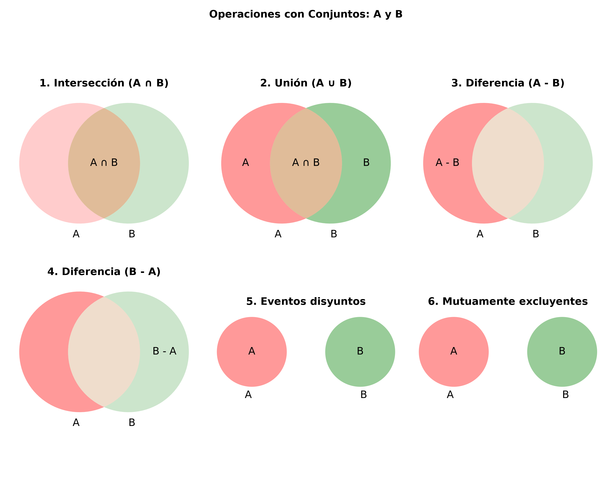
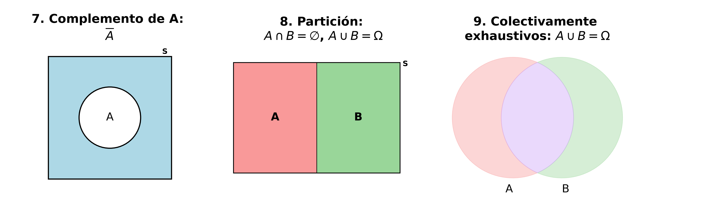
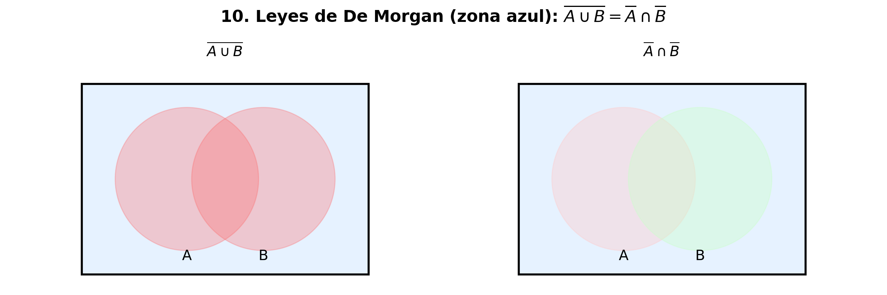
9.0.2 Operaciones con conjuntos: ejemplo
Revisemos algunos ejemplos:
# Crear espacio muestral
Omega <- rolldie(2)
# Definir eventos
A <- subset(Omega, isin(Omega, c(2, 1), ordered = TRUE)) # Evento A
B <- subset(Omega, isin(Omega, c(1, 2), ordered = FALSE)) # Evento B
# Convertir a representaciones de fila únicas
rows_A <- apply(A, 1, paste, collapse = "_")
rows_B <- apply(B, 1, paste, collapse = "_")
# Operaciones de conjuntos
union_rows <- union(rows_A, rows_B)
intersect_rows <- intersect(rows_A, rows_B)
setdiff_A_B <- setdiff(rows_A, rows_B)
setdiff_B_A <- setdiff(rows_B, rows_A)
set_equal <- setequal(rows_A, rows_B)
# Reconstruir los data.frames desde las filas originales
reconstruct <- function(keys, original_df) {
subset(original_df, apply(original_df, 1, paste, collapse = "_") %in% keys)
}
cat("C) Unión\n"); print(reconstruct(union_rows, Omega))## C) Unión## X1 X2
## 2 2 1
## 7 1 2cat("D) Intersección\n"); print(reconstruct(intersect_rows, Omega))## D) Intersección## X1 X2
## 2 2 1cat("E) Diferencia A-B\n"); print(reconstruct(setdiff_A_B, Omega))## E) Diferencia A-B## [1] X1 X2
## <0 rows> (o 0- extensión row.names)cat("F) Diferencia B-A\n"); print(reconstruct(setdiff_B_A, Omega))## F) Diferencia B-A## X1 X2
## 7 1 2cat("G) Igualdad A == B ? ", set_equal, "\n")## G) Igualdad A == B ? FALSE10 Modelos de urnas
Se caracterizan por las siguientes dos codiciones:
Condición 1:
En una urna hay objetos distinguibles (por ejemplo, numeradas), no distinguibles (por ejemplo, rojas) o mixtas. Estos objetos se consideran como una población y pueden ser: fichas, bolas, letras, personas, etc.
Condición 2:
De esta urna se quiere sacar uno o más objetos, al mismo tiempo o no, reemplazando o no los objetos seleccionadas antes de seleccionar nuevamente otro(s) objetos(s) y observando el orden o no de objetos extraídos. Los objetos extraídos se consideran como una muestra. Para obtener estas muestras, podemos distinguir los siguientes casos:
Seleccionar sin reemplazo. Cada objeto seleccionado se deposita fuera de la urna, y por eso puede seleccionarse una sola vez.
Seleccionar con reemplazo. Cada objeto seleccionado se reemplaza en la urna, y por eso puede seleccionarse varias veces.
Seleccionar considerando el orden. Se selecciona cierta cantidad de objetos, uno tras otro, y se considera el orden obtenido. En este caso, los objetos seleccionados se pueden considerar como tuplas ordenadas.
Seleccionar sin considerar el orden. Se selecciona cierta cantidad de objetos a la vez (o también uno tras otro), pero sin que interese el orden de los objetos extraídos.
11 Modelos de urnas: ejemplo
Los cuatro casos se pueden combinar: los objetos se seleccionan con o sin reemplazo y con o sin orden (como se muestra en la figura de abajo).
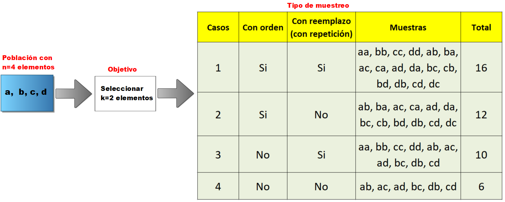
12 Otros modelos de urnas
Podemos identificar otros tipos de modelo de urna con base en las situaciones anteriores, como, por ejemplo:
- Seleccionar formando una partición. Seleccionar grupos de objetos sin importar el orden y cada grupo se guarda, por ejemplo, en gavetas numeradas. Esto se hace hasta que no queden objetos en la urna.
13 Técnicas de conteo
Son:
Conteo por enumeración de elementos.
Conteo a través de diagramas de árbol.
Principio de adición.
Teorema fundamental del conteo.
Conteo de permutaciones.
Conteo de combinaciones.
13.0.1 Enumeración de elementos
Ejemplo 1
Ver ejemplo de la sección 6.
13.0.2 Diagrama de árbol
Ejemplo 2
El diagrama de árbol correspondiente al caso 2 del ejemplo de la sección 6 es:
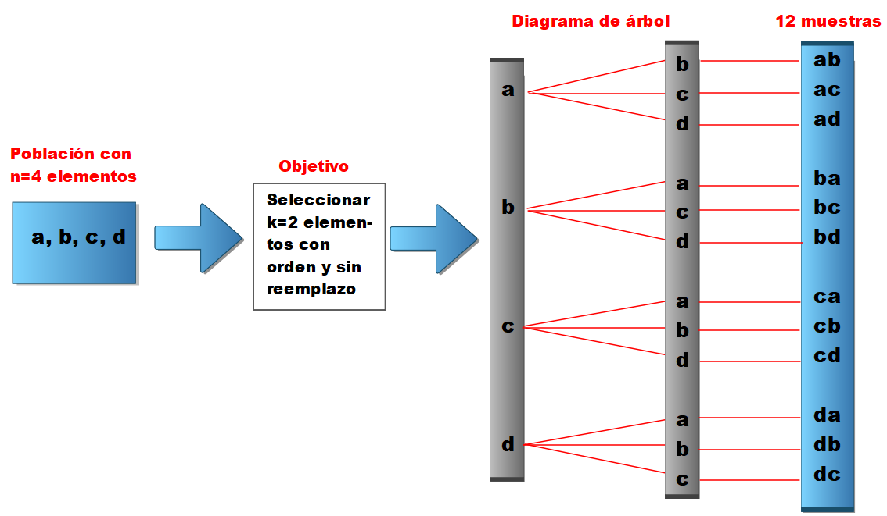
13.0.3 Principio de adición
Siempre se cumple que
\[\#(A\cup B) \;=\; \#A \;+\; \#B \;-\; \#(A \cap B)\]
Ejemplo 3
En el lanzamiento de dos dados, ¿de cuántas formas se puede obtener que la suma de los números sea un siete o un ocho?
Solución. Sean \(A\) y \(B\) los eventos “obtener un siete” y “obtener un ocho” respectivamente. Entonces, \(A\cup B\) será el evento “obtener un siete o un ocho”. Debido a que
\[A =\{(1, 6), (2, 5), (3, 4), (4, 3), (5, 2), (6, 1)\}, \qquad B = \{(2, 6), (3, 5), (4, 4), (5, 3), (6, 2)\}\] entonces \(A\) y \(B\) pueden ocurrir de 6 y 5 formas distintas respectivamente, y, además, son mutuamente excluyentes. Por consiguiente, por el principio de adición, el evento \(A∪B\) ocurrirá de 6 + 5 = 11 maneras distintas. Es decir,
\[\#(A\cup B) \;=\; \#A \;+\; \#B\;-\; \#(A \cap B) \;=\; 6+ 5- 0 \;=\; 11\]
13.0.4 Teorema fundamental del conteo
Si \(r\) experimentos se ejecutan de tal manera que:
El primero puede resultar en \(n_1\) posibles resultados.
Si para cada uno de estos \(n_1\) posibles resultados hay \(n_2\) posibles resultados del segundo experimento.
Si para cada uno de los posibles resultados de los dos primeros experimentos hay \(n_3\) posibles resultados del tercer experimento.
Y así sucesivamente.
Entonces, hay un total de \(n_1 \cdot n_2 \cdots n_r\) posibles resultados de los \(r\) experimentos.
Ejemplo 4
Considerando el caso 1 del ejemplo de la sección 6, el número posible de muestras de tamaño 2 (con orden y con reemplazo) que se pueden seleccionar de un total de 4 objetos es:
\[ 4\cdot 4 \;=\; 16 \] Ejemplo 5
Considerando el caso 2 del ejemplo de la sección 6, el número posible de muestras de tamaño 2 (con orden y sin reemplazo) que se pueden seleccionar de un total de 4 objetos es:
\[ 4\cdot 3 \;=\; 12 \]
14 Conteo de permutaciones
14.0.1 Preliminares
Definición
Una permutación es un arreglo ordenado de una cantidad finita de objetos.
Tipos de permutaciones
Permutaciones sin repetición de \(n\) objetos tomados todos a la vez.
Permutaciones sin repetición de \(n\) objetos tomados de \(k\) en \(k\) (\(k \leq n\)).
Permutaciones con repetición de \(n\) objetos tomados de \(k\) en \(k\) (\(k\) es cualquier número natural).
Permutaciones circulares.
Permutaciones de \(n\) objetos de los cuales hay \(n_1\) de un primer tipo, \(n_2\) de un segundo tipo, \(\cdots\), \(n_k\) de un \(k\)-ésimo tipo, donde \(n_1 + n_2 + \cdots + n_k = n\).
Maneras de hacer una partición de un conjunto.
14.0.2 Permutaciones sin repetición de \(n\) objetos tomados todos a la vez
El número de permutaciones de un conjunto de \(n\) elementos distintos es igual a
\[n!:=1\cdot 2\cdots (n-1)\cdot n\]
El símbolo “\(!\)” se conoce con el nombre de factorial. Cuando escribamos, por ejemplo, \(5!\) leeremos “5 factorial”. Algunos valores factoriales son los siguientes:
\[\begin{eqnarray*} 0!&:=& 1 \\ 1!&=& 1, \\ 2!&=& 2\cdot 1 \;=\;2,\\ 3!&=& 3 \cdot 2\cdot 1\;=\;6, \\ 4!&=& 4 \cdot 3 \cdot 2\cdot 1 \;=\; 24, \qquad etc. \end{eqnarray*}\]
Ejemplo 6
Si se le pide a un consumidor que ordene, por orden de preferencia, el sabor de cinco marcas de cerveza, entonces el número de permutaciones que resultan será \(5! = 120\).
Ejemplo 7
Cuatro libros distintos de matemáticas, seis diferentes de física y dos diferentes de química se colocan en un estante. ¿De cuántas formas distintas es posible ordenarlos si:
Los libros de cada asignatura deben estar todos juntos.
Solamente los libros de matemáticas deben estar juntos?
Solución.
- Los libros de matemáticas pueden ordenarse de 4! formas, los de física de 6! formas, los de química de 2! formas y los tres grupos de 3! formas. Por consiguiente,
\[\mbox{Número de ordenaciones pedido = 4! 6! 2! 3! = 207.360}\]
- Considerar los cuatro libros de matemáticas como un solo libro. Entonces, se tienen 9 libros que pueden ordenarse de 9! formas. En todos estos casos, los libros de matemáticas están juntos, pero pueden ordenarse de 4! formas. Por consiguiente,
\[\mbox{Número de ordenaciones pedido = 9! 4! = 8.709.120}\]
14.0.3 Permutaciones sin repetición de \(n\) objetos tomados de \(k\) en \(k\) (\(k \leq n\))
El número de permutaciones de un conjunto de \(n\) elementos distintos tomados de \(k\) en \(k\) es igual a
\[nPk \;=\; \frac{n!}{(n-k)!}\]
Las permutaciones de este tipo también se pueden considerar como muestras seleccionadas sin reemplazo. Además, obsérvese que cuando \(k=n\), este resultado coincide siempre con $n!. Es decir,
\[nPn \;=\; n!\]
Ejemplo 8
Considerando el caso 2 del ejemplo de la sección 6, el número posible de muestras de tamaño \(k=2\) (con orden y sin reemplazo) que se pueden seleccionar de un total de \(n=4\) objetos es:
\[4P2 \;=\; \frac{4!}{(4-2)!} \;=\; \frac{24}{2} \;=\;12\]
14.0.4 Permutaciones con repetición de \(n\) objetos tomados de \(k\) en \(k\) (\(k\) es cualquier número natural)
El número de permutaciones de un conjunto de \(n\) elementos distintos tomados de \(k\) en \(k\) es igual a
\[n^k\]
Ejemplo 9
Considerando el caso 1 del ejemplo de la sección 6, el número posible de muestras de tamaño \(k=2\) (con orden y con reemplazo) que se pueden seleccionar de un total de \(n=4\) objetos es:
\[n^k \;=\; 4^2 \;=\; 16\]
14.0.5 Permutaciones circulares
El número de permutaciones de un conjunto de \(n\) elementos distintos acomodados en un círculo es igual a
\[(n-1)!\]
Ejemplo 10
Sabemos que si queremos sentar a cuatro personas A, B, C, D, una al lado de la otra en fila, el número de arreglos que podemos hacer es 4! = 24. Ahora bien, si los queremos sentar alrededor de una mesa circular, ¿de cuántas maneras lo podemos hacer?
Solución.
Al considerar a una persona en un lugar fijo (digamos A) y acomodar a las otras tres personas en 3! formas diferentes, se encuentra que hay 6 arreglos distintos alrededor de la mesa circular (compárese con la figura de abajo).
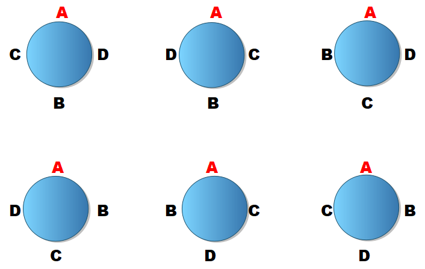
14.0.6 Permutaciones por tipos
El número de permutaciones de \(n\) objetos de los cuales hay \(n_1\) de un primer tipo, \(n_2\) de un segundo tipo, \(\cdots\), \(n_k\) de un \(k\)-ésimo tipo, donde
\[n_1 + n_2 + \cdots + n_k = n\]
es:
\[\frac{n!}{n_1! \, n_2!\cdots n_k!}\]
donde \(n_1, \ldots, n_k\) son números naturales.
Ejemplo 11
¿Cuántas palabras distintas se pueden formar con las letras de la palabra “estadística”? (También cuentan palabras sin sentido como, por ejemplo, “setadistica”).
Solución.
Obsérvese que en la palabra “estadística” hay \(n=11\) letras, distribuidas así: 1 e", 2s”, 2 “t”, 2 “a”, 1 “d”, 2 “i” y 1 “c”. Por tanto, se concluye que podemos formar
\[\frac{11!}{1! \, 2!\, 2!\, 2!\, 1!\, 2! \, 1!} \;= \; 2.494.800\]
palabras distintas con las letras de la palabra mencionada anteriormente.
Ejemplo 12
¿Cuántas señales diferentes se pueden hacer con 5 banderas de las cuales 2 son azules y 3, rojas?
Solución.
El número de señales que se pueden hacer es: \[\frac{5!}{2!\, 3!} = 10\]
14.0.7 Maneras de hacer una partición de un conjunto
El número de formas de partir \(n\) objetos distintos en donde en \(k\) celdas con \(n_1\) objetos en la primera celda, \(n_2\) en la segunda celda, \(\ldots\), \(n_k\) en la \(k\)-ésima celda, con \(n_1 + n_2 + \cdots + n_k =n\), es
\[{n\choose {n_1, n_2, \ldots, n_k}}\;= \; \frac{n!}{n_1! \, n_2!\cdots n_k!}\]
Se resalta el hecho que no importa el orden de los objetos dentro de cada celda.
Ejemplo 13
Doce estudiantes van a viajar en carros distintos a cierta ciudad. Si 3 de ellos van en un carro, 4 en otro carro y 5 en el otro, ¿de cuántas maneras se pueden acomodar si cualquiera puede conducir?
Solución.
Hay
\[{12\choose {3, 4, 5}}\;= \; \frac{12!}{3! \, 4!\, 5!} \;= \; 27.720\]
formas en que los 12 estudiantes se pueden acomodar en los tres carros, viajando 3, 4 y 5 estudiantes en carros distintos.
15 Conteo de combinaciones
Definición
Una escogencia de \(k\) objetos de un conjunto de n objetos distintos, sin importar el orden en que los \(k\) objetos son escogidos, se llama combinación.
Tipos de combinaciones
- El número de combinaciones de \(k\) objetos seleccionados (sin repetición) de un conjunto de \(n\) elementos es:
\[nCk = {n\choose k}:= \frac{n!}{k!(n-k)!},\quad \text{siendo}\quad {n\choose 0}:=1\]
- El número de combinaciones de \(k\) objetos seleccionados (con repetición) de un conjunto de \(n\) elementos es:
\[{n+k-1\choose k} = \frac{(n+k-1)!}{k!(n-1)!},\quad \text{siendo}\quad {n\choose 0}:=1\]
Comentario
Los números \({n\choose k}\) se conocen con el nombre de coeficiente binomial porque aparecen como coeficientes de \(a^kb^{n-k}\), con \(0\leq k\leq n,\), en el desarrollo binomial de \((a+b)^n\) como se muestra a continuación:
\[(a+b)^n= \sum\limits_{k=0}^n {n\choose k}a^kb^{n-k}, \qquad \text{para todo $a,b\in R$}.\]
Ejemplo 14
Ver casos 3 y 4 del ejemplo de la sección 6.
Ejemplo 15
De un total de 5 matemáticos y 7 físicos se forma un comité de 2 matemáticos y 3 físicos. ¿De cuántas maneras puede formarse si:
Puede pertenecer a él cualquier matemático y físico.
Un físico determinado debe pertenecer al comité.
Dos matemáticos determinados no pueden pertenecer al comité?
Solución de la parte (a).
2 matemáticos, de un total de 5, pueden elegirse de \({5\choose 2}=10\) maneras. Ahora, 3 físicos de un total de 7 pueden elegirse de \({7\choose 3}=35\) maneras. Por consiguiente, \[\text{número total de selecciones posibles} \;= \; 10 \cdot 35 \; =\; 350.\]
Solución de la parte (b).
2 matemáticos, de un total de 5, pueden elegirse de \({5\choose 2}=10\) maneras. Ahora, 2 físicos restantes, de un total de 6, pueden elegirse de \({6\choose 2}=15\) maneras. Por consiguiente, \[\text{número total de selecciones posibles} \;= \; 10 \cdot 15 \; =\; 150.\]
Solución de la parte (c).
2 matemáticos, de un total de 3, pueden elegirse de \({3\choose 2}=3\) maneras. Ahora, 3 físicos, de un total de 7, pueden elegirse de \({7\choose 3}=35\) maneras. Por consiguiente,
\[ \text{número total de selecciones posibles} \;= \; 3 \cdot 35 \; =\; 105.\]
16 Modelos de urna (con R)
16.0.1 Muestreo con orden y con reemplazo
Supongamos que tenemos una caja con tres (3) elementos, etiquetados con 1, 2 y 3, respectivamente y que vamos a seleccionar una muestra de tamaño 2 de la caja (con orden y con reemplazo).
urnsamples(1:3, size = 2, ordered = TRUE, replace = TRUE) #A) Con orden y con reemplazo## Var1 Var2
## 1 1 1
## 2 2 1
## 3 3 1
## 4 1 2
## 5 2 2
## 6 3 2
## 7 1 3
## 8 2 3
## 9 3 3Este experimento es equivalente a lanzar dos veces un dado de 3 caras, lo que podríamos haber logrado con:
rolldie (2, nsides = 3) #B) Dado de tres caras16.0.2 Muestreo con orden y sin reemplazo
Supongamos que tenemos una caja con tres (3) elementos, etiquetados con 1, 2 y 3, respectivamente y que vamos a seleccionar una muestra de tamaño 2 de la caja (con orden y sin reemplazo).
urnsamples(1:3, size = 2, ordered = TRUE, replace = FALSE) #C) Con orden y sin reemplazo## Var1 Var2
## 1 1 1
## 2 2 1
## 3 3 1
## 4 1 2
## 5 2 2
## 6 3 2
## 7 1 3
## 8 2 3
## 9 3 316.0.3 Muestreo sin orden y con reemplazo
Supongamos que tenemos una caja con tres (3) elementos, etiquetados con 1, 2 y 3, respectivamente y que vamos a seleccionar una muestra de tamaño 2 de la caja (sin orden y con reemplazo).
urnsamples(1:3, size = 2, ordered = FALSE, replace = TRUE) #D) Sin orden y con reemplazo## [,1] [,2]
## [1,] 1 2
## [2,] 1 3
## [3,] 2 316.0.4 Muestreo sin orden y sin reemplazo
Supongamos que tenemos una caja con tres (3) elementos, etiquetados con 1, 2 y 3, respectivamente y que vamos a seleccionar una muestra de tamaño 2 de la caja (con orden y sin reemplazo).
urnsamples(1:3, size = 2, ordered = FALSE, replace = FALSE) #E) Sin orden y con reemplazo## [,1] [,2]
## [1,] 1 2
## [2,] 1 3
## [3,] 2 317 Conteo (con R)
17.0.1 Ejemplo
Si se le pide a un consumidor que ordene, por orden de preferencia, el sabor de cinco marcas de cerveza, entonces el número de permutaciones que resultan será \(5!=120\). Con R se puede calcular de dos maneras:
factorial(5) #A) Factorial
nsamp(n = 5, k = 5, replace = FALSE, ordered = TRUE) #B) Sin reemplazo, con orden ## [1] 12017.0.2 Ejemplo
Supongamos que se quiere seleccionar (con orden) una muestra de tamaño 2 de una urna con 3 elementos disponibles. Si es con reemplazo, tendríamos 9 posibilidades, pero, sin reemplazo, solo 6. Con R:
nsamp(n = 3, k = 2, replace = TRUE, ordered = TRUE) #C) Con reemplazo, con orden
nsamp(n = 3, k = 2, replace = FALSE, ordered = TRUE) #D) Sin reemplazo, con orden ## [1] 9## [1] 617.0.3 Ejemplo
El número de formas diferentes en que se pueden sentar 8 alumnos en una oficina con sólo 5 sillas es \(\frac{8!}{(8-5)!} =6720\). Con R:
nsamp(n = 8, k = 5, replace = FALSE, ordered = TRUE) #E) Sin reemplazo, con orden## [1] 672017.0.4 Ejemplo
Un comité, de 3 mujeres de un grupo de 8, se puede escoger de \({8\choose 3}= 56\) maneras. En R se puede calcular de dos maneras:
choose(8,3) #A) Coeficiente binomial
nsamp(n = 8, k = 3, replace = FALSE, ordered = FALSE) #B) Sin reemplazo, sin orden## [1] 5617.0.5 Ejemplo
Supongamos que se quiere seleccionar (sin orden) una muestra de tamaño 2 de una urna con 3 elementos disponibles. Si es sin reemplazo, tendríamos 3 posibilidades, pero, con reemplazo, solo 6. Con R:
nsamp(n = 3, k = 2, replace = FALSE, ordered = FALSE) #C) Sin reemplazo, sin orden
nsamp(n = 3, k = 2, replace = TRUE, ordered = FALSE) #D) Con reemplazo, sin orden## [1] 3## [1] 617.0.6 Ejemplo
Cuatro libros distintos de matemáticas, seis diferentes de física y dos diferentes de química se colocan en un estante. Determinar el número de formas distintas de ordenar los 12 libros si los libros de cada asignatura deben estar todos juntos.
Solución
Los libros de matemáticas pueden ordenarse de \(4!=24\) formas, los de física de \(6!=720\) formas y los de química de \(2!=2\) formas. En R:
M <- factorial(4) #A) Matemática
f <- factorial(6) #B) Física
Q <- factorial(2) #C) QuímicaLos tres grupos se pueden ordenar de \(3!=6\) formas. En R:
G <- factorial(3) #D) Los tres grupos de librosPor consiguiente, por el teorema fundamental del conteo, el número posible de maneras de ordenar los libros es (los libros de cada asignatura deben estar todos juntos): \[ 4!\, 6! \, 2! \, 3! \;= \; 207.360\]
En R:
M*f*Q*G #E) Permutación buscada## [1] 20736017.0.7 Ejemplo
De un total de 5 matemáticos y 7 físicos se forma un comité de 2 matemáticos y 3 físicos. El objetivo ahora es determinar el número de posible maneras puede formarlo si un físico determinado debe pertenecer al comité. Entonces:
Solución
Tenemos que 2 matemáticos (de un total de 5) pueden elegirse de \({5\choose 2}=10\) maneras y que 2 físicos restantes (de un total de 6) pueden elegirse de \({6\choose 2}=15\) maneras. En R:
M<- choose(5,2) #A) Matemáticos
F<- choose(6,2) #B) FísicosPor consiguiente, el número total de selecciones posibles es \(10 \cdot 15 = 150\). En R:
M*F #C) Combinación buscada## [1] 15018 Ejemplos (asociación de los temas con la realidad)
18.0.1 Ejemplo: enunciado (Baloto)
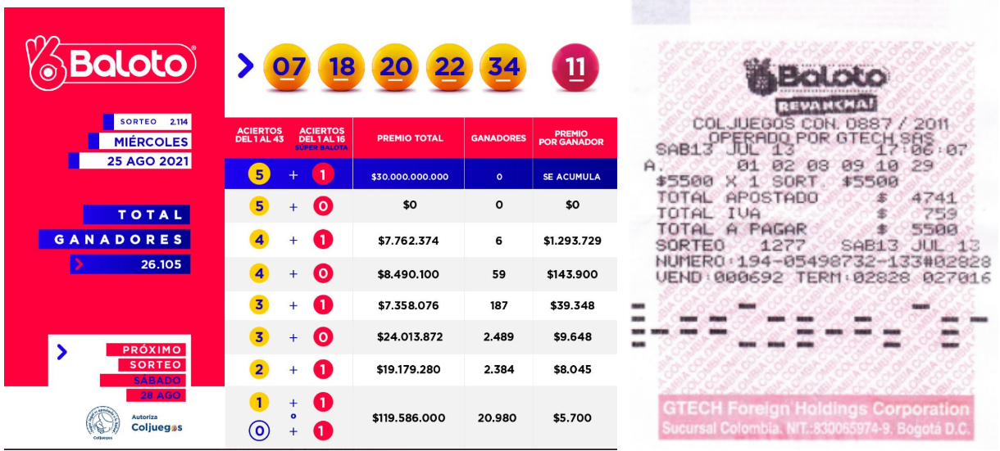
Baloto es un juego de azar de tipo loto en línea, donde el participante apuesta por un acumulado multimillonario seleccionando cinco números del 1 al 43 (sin repetición) y una súper balota adicional del 1 al 16, a través de una terminal de venta. La apuesta tiene un valor de 6.000 pesos colombianos. Según información actualizada al 27 de julio de 2025 (12:35 a. m.), cerca de 40.000 personas resultaron ganadoras de premios en las modalidades Baloto y Revancha, con un acumulado en juego de 11.400 millones de pesos colombianos para Baloto y 25.600 millones de pesos colombianos para Revancha. Estos y otros detalles pueden consultarse en el sitio web oficial.
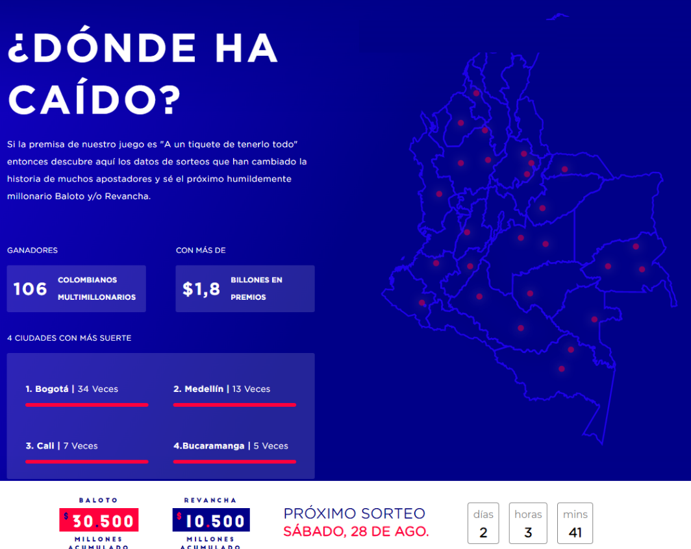
El objetivo es determinar el número de posibilidades que tenemos en sacar las 6 balotas con las condiciones descritas anteriormente.
18.0.2 Ejemplo: solución (Baloto)
Se deben escoger 6 números. Entonces:
Para el primer número, hay 43 opciones de elegir un número.
Para el segundo número, hay 42 opciones de escogencia, porque no pueden repetirse.
Para el tercer número, hay 41 opciones.
Para el cuarto, hay 40 opciones.
Para el quinto, hay 39 opciones.
Para el sexto 16 opciones.
Para conocer el número total de opciones se aplica el teorema fundamental del conteo: se multiplican las opciones por cada número. Es decir:
# Permutaciones sin reemplazo de 5 números del 1 al 43
permutaciones_5 <- prod(43:39)
# Súper balota del 1 al 16
super_balota <- 16
# Total de combinaciones posibles
total_con_orden <- permutaciones_5 * super_balota
total_con_orden\[43 \cdot 42\cdot 41\cdot 40\cdot 39\cdot 16 \;=\; 1.848´188.160\]
Este resultado corresponde al número de casos posibles, el cual es muy grande, ya que debe seleccionar uno de esa cantidad. Esto indica lo difícil que es ganarse el baloto.
19 Ejercicios
Ejercicio 1
Dado el experimento aleatorio, encuentre los elementos de los eventos indicados abajo, el número de elementos que contiene y el tamaño de la muestra. Explique siempre sus afirmaciones e interprete los resultados hallados.
Experimento: Un dado se lanza dos veces.
- \(\Omega\): El espacio muestral.
- Evento B: La suma de los números es 7.
- Evento C: La suma de los números es por lo menos un 11.
- Evento D: La suma de los números es a lo más un 2.
- Evento E: Se obtiene un doble.
- Evento F: No se obtiene un doble.
- Unión de B y F.
- Interseción de C y E.
- Diferencia C-F.
- Evento J: Unión de E y F. Verifique si J es igual a \(\Omega\).
- Intersección de C y D.
- Diferencia de B y D.
- Evento M: Contiene los elementos de la forma (3,4), ordenados.
- Evento N: Contiene los elementos de la forma (3,4), no ordenados. Compare con el evento M.
Ejercicio 2
Dado el experimento aleatorio, encuentre los elementos de los eventos indicados abajo, el número de elementos que contiene y el tamaño de la muestra. Explique siempre sus afirmaciones e interprete los resultados hallados.
Experimento: Una moneda se lanza cuatro veces.
- \(\Omega\): El espacio muestral.
- Evento B: Los primeros 2 elementos.
- Evento C: Los primeros 5 elementos.
- Unión de B y C.
- Intersección de B y C.
- Diferencia B-C.
- Diferencia C-B.
- Evento H: El complemento de B.
- Evento I: El complemento de C
- Intersección de B y H.
- Evento K: Unión de C y I. Verifique si K es igual a \(\Omega\).
- Evento L: Salgan 2 caras.
- Evento M: Salgan 3 caras.
Ejercicio 3
Sea
\[\Omega=\{0,1,2,3,4,5,6,7,8,9\}\]
el espacio muestral correspondiente a un experimento aleatorio dado. Sean \(A\), \(B\), \(C\) y \(D\) eventos de \(\Omega\) definidos por
\[A=\{0,1, 2, 3\}, \quad B=\{4, 5, 6, 7\}, \quad C=\{2, 4, 6\}, \quad D=\{1, 8, 9\}\]
Liste los elementos de los conjuntos que corresponden a los siguientes eventos:
\(A\cup D\).
\(B\cap C\).
\(\overline{D}\).
\((\overline{D}\cap A)\cup C\).
\(\overline{\Omega\cap B}\).
\(B\cap C\cap \overline{D}\).
Ejercicio 4
Señale la región de la figura de abajo que representa a cada evento:
\(A\cup B\cup C\).
\(A\cap B\cap C\).
\(A\cap B\cap \overline{C}\).
\(\overline{A}\cap B\cap C\).
\(\overline{A}\cap \overline{B}\cap \overline{C}\).
\((\overline{A\cup B}) \cap C\).
\(A\cup(\overline{B\cap C})\).
\(\overline{A\cup B\cup C}\).
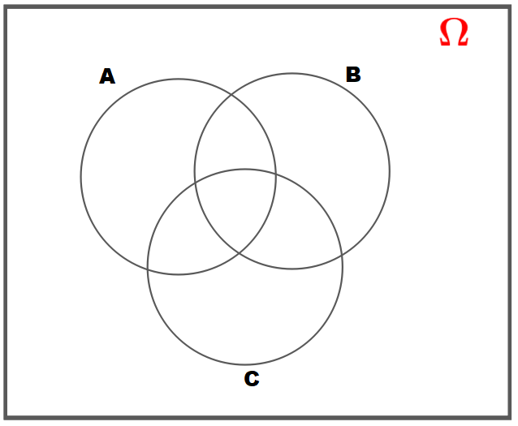
Ejercicio 5
Sean \(\Omega\) el evento de todos los turistas que visitaron a Barranquilla durante un fin de semana, y \(A\), \(B\) y \(C\) los eventos formados por los turistas que visitaron el Museo Romántico, el Zoológico y Bocas de Cenizas, respectivamente. Exprese con palabras las regiones indicadas a continuación teniendo en cuenta la figura de abajo:
Región 1.
Regiones 1, 2, 3, 4, 5, 6 y 7 juntas.
Región 8.
Regiones 1 y 4 juntas.
Regiones 4, 5, 7 y 8 juntas.
Regiones 5, 6 y 7.
Regiones 2, 3, y 4 juntas.
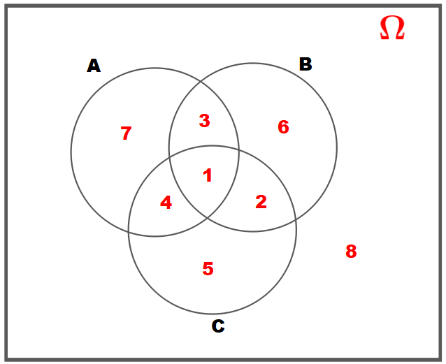
Ejercicio 6
En una encuesta realizada en un colegio de la ciudad a un total de 150 alumnos se encontró: 54 estudian álgebra; 89, inglés; 80, ciencias naturales; 60, ciencias naturales e inglés; 10, sólo álgebra; 20, álgebra y ciencias naturales; 15, las tres materias simultáneamente. Determine el número de alumnos que conforman los siguientes eventos:
Estudian álgebra e inglés pero no ciencias naturales.
Estudian sólo una materia.
Estudian a lo sumo dos materias.
Sugerencia: Defina los eventos \(A\), \(B\) y \(C\) como se indican en el diagrama de Venn de abajo, complételo con las frecuencias correspondientes y aplique propiedades las operaciones con conjuntos para resolver cada inciso.
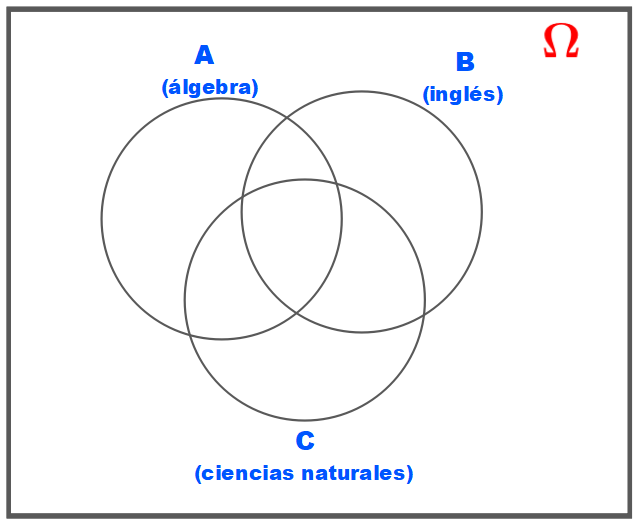
Ejercicio 7
Una universidad realiza tres tipos de pruebas a 100 aspirantes y obtiene los siguientes resultados: 2 fracasaron en las tres pruebas; 7, en la primera y en la segunda; 8, en la segunda y en la tercera; 10, en la primera y en la tercera; 25, en la primera; 30, en la segunda; 25, en la tercera. Determine el número de aspirantes que conforman los siguientes eventos: (a) Fracasaron exactamente en una prueba.
Aprobaron las tres pruebas.
Fracasaron en la primera y en la tercera pero no en la segunda.
Fracasaron en la segunda y en la tercera pero no en la primera.
Fracasaron en al menos una prueba.
Aprobaron al menos una prueba.
Aprobaron la segunda o la tercera pero no la primera.
Sugerencia: Defina los eventos \(A\), \(B\) y \(C\) como se indican en el diagrama de Venn de abajo, complételo con las frecuencias correspondientes y aplique propiedades las operaciones con conjuntos para resolver cada inciso.
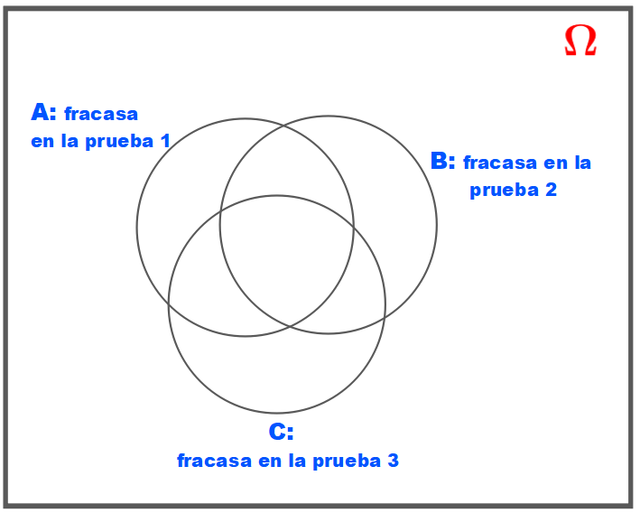
Ejercicios 8 a 14
Los estudiantes de un curso de estadística se clasifican como estudiantes de administración, economía o ingeniería; como repitente o no repitente y también como hombre o mujer. Encuentre el número total de clasificaciones posibles para los estudiantes de dicho curso.
¿De cuántas maneras diferentes se puede responder un cuestionario de falso-verdadero que tiene 10 preguntas?
¿De cuántas maneras pueden sentarse tres hombres y tres mujeres en una fila con seis puestos si se deben alternar?
¿Cuántas palabras diferentes se pueden formar con la palabra “Barranquilla” (las palabras no necesariamente deben tener sentido) si (a) no hay restricción alguna, (b) la primera letra debe ser una “q” y la última una “a”.
Las placas para autos en Barranquilla antes tenían dos letras y cuatro números. El sistema de nomenclatura cambió y ahora son de tres letras y tres números. Con el sistema actual, ¿aumentó o disminuyó el número de placas que se pueden emitir? ¿En qué porcentaje?
¿De cuántas maneras se pueden parquear siete carros, de modelos distintos, en una calle si hay tres zonas disponibles en un lado de la calle y cuatro en el lado opuesto?
La mayor accionista de una determinada empresa decide que en el futuro se divida el presupuesto de publicidad entre tres agencias. Seis son las agencias que están siendo consideradas para este trabajo. ¿Cuántas son las posibles elecciones de tres agencias?
Ejercicio 15
Dados los dígitos 0, 2, 4, 5, 6, 8 y 9. Si no se aceptan repeticiones:
¿Cuántos números de tres dígitos se pueden formar?
¿Cuántos de esos números son múltiplos de 5?
Ejercicio 16
Supongamos que 7 personas se quieren organizar en una fila.
¿De cuántas maneras diferentes pueden hacerlo?
¿De cuántas maneras diferentes pueden hacerlo si una de ellas no debe estar al comienzo de la fila?
Ejercicio 17
Una persona ha visto un accidente de tránsito cuyo culpable huyó. A pesar de esto le dice a la Policía que la placa del carro en el que viajaba el culpable tenía tres letras (de las cuales las dos primeras eran C y A) y tres dígitos (de los cuales el último era 0). Encuentre el número máximo de placas de carro que la Policía debe verificar bajo cada una de las siguientes condiciones (nuestro alfabeto tiene 27 letras):
Las tres letras son diferentes y los tres dígitos también.
Las tres letras son diferentes y los dos dígitos que faltan son diferentes entre sí.
La letra que hace falta es diferente de la A y los dígitos que hacen falta son diferentes e impares.
Ejercicio 18
Supongamos que se quieren formar números de tres dígitos con los dígitos 0, 2, 4, 5, 7, 8 y 9.
¿Cuántos números resultan si los dígitos pueden estar repetidos?
¿Cuántos números resultan si cada dígito puede usarse sólo una vez?
¿Cuántos números resultan si los números resultantes son impares y si los dígitos pueden estar repetidos?
¿Cuántos números resultan si los números resultantes son pares y si cada dígito puede usarse sólo una vez?
¿Cuántos números son menores que 440 y si los dígitos pueden estar repetidos?
¿Cuántos números resultan si el primer dígito es 5 y si cada dígito puede usarse sólo una vez?
Ejercicio 19
¿Son las siguientes afirmaciones verdaderas o falsas? Justifique cada respuesta.
Si A y B son mutuamente excluyentes, entonces también lo son sus complementos.
Un evento y su complemento son mutuamente excluyentes.
Si dos eventos son mutuamente excluyentes, entonces son colectivamente exhaustivos.
Si dos sucesos son colectivamente exhaustivos, entonces son mutuamente excluyentes.
Ejercicio 20
De un conjunto \[B\;=\; \{x\in \mathbb{N} \; / \; \forall t\in \mathbb{R} :\, \frac{1}{4}t^2-t + 7-x+ \sqrt{68-x^2}\, \geq \,0\} \]
se sacan tres números sin reemplazo.
- ¿De cuántas maneras se pueden extraer 3 números sin reemplazo cuya suma sea par?
- ¿Cuántos subconjuntos de 3 elementos contienen al menos un número primo y al menos un cuadrado perfecto?
Ejercicio 21
Sean \(\Omega=\{000, 001, 010, 100, 011, 101, 110, 111\}\), \(S(\omega)\) la suma de las cifras de \(\omega\in \Omega\) y \(A_i=\{\omega \, / \, S(\omega)=i\}\) para \(i=0,1,2,3\).
¿Forman estos conjuntos una descomposición (partición) de \(\Omega\), es decir, si \(A_i\cap A_j = \emptyset\) para \(i\ne j\) y \(\bigcup\limits_{i=0}^3 A_i = \Omega\)?
¿Valdrá esto también si \(\Omega\) consiste de todos los números de \(n\) puestos, compuestos de ceros y unos e \(i=0,1, \ldots, n\)?
¿Cuántos elementos tiene este conjunto \(\Omega\)?
Ejercicio 22
Una torre camina en un tablero de ajedrez con un solo paso desde la esquina inferior izquierda hasta la esquina superior derecha pasando solamente hacia arriba o hacia la derecha.
De cuántas maneras diferentes puede hacer esto?
Responda (a) para el caso en que el tablero sea de \(n\times n\).
Sugerencia: Marque un paso hacia arriba con un 0 y uno hacia la derecha con un 1.
Ejercicio 23
¿Cuántos divisores tiene el número 100.000.000?
Ejercicio 24
Sea \(A=\{1, 2, \ldots, r\}\) y \(B=\{1, 2, \ldots, s\}\). ¿Cuántas funciones diferentes \(F:A\to B\) existen?
20 Otros ejercicios
Tener en cuenta la bibliografía complementaria No. 2 y realizar los ejercicios que aparecen en:
La Sección 2.1 (página 110): Experimentos, espacios muestrales y eventos.
La Sección 2.2 (página 133): Modelos de urna y técnicas de conteo.
La Sección de Ejercicios Complementarios (página 175).
Al hacer click aquí, usted encontrará una serie de artículos publicados en diferentes áreas de aplicación. Seleccione algunos de ellos y aplique la teoría explicada en este documento.
Texto guía
- Llinás, H. (2014). Introducción a la teoría de probabibilidad. Barranquilla: Editorial Universidad del Norte.
Bibliografía complementaria
LLinás, H., Rojas, C. (2005). Estadística descriptiva y distribuciones de probabilidad. Barranquilla: Editorial Universidad del Norte.
Consultar mis Notas de clase en Estadística I.
Consultar mis Notas de clase: Cap. 2 (Descriptiva).
Consultar mis otras Notas de clase.
Apéndice de tablas y diagramas: Click aquí.
Consultar el documento: Enlaces y materiales de ayuda.
If you found any errors or have suggestions, please write to hllinas@uninorte.edu.co. Thank you.